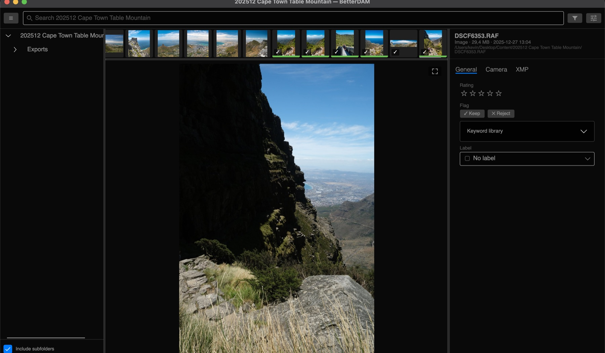
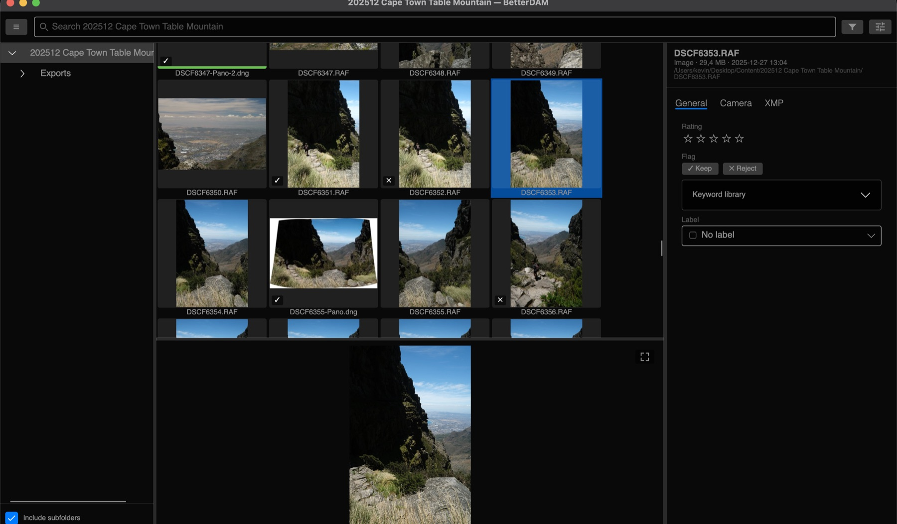
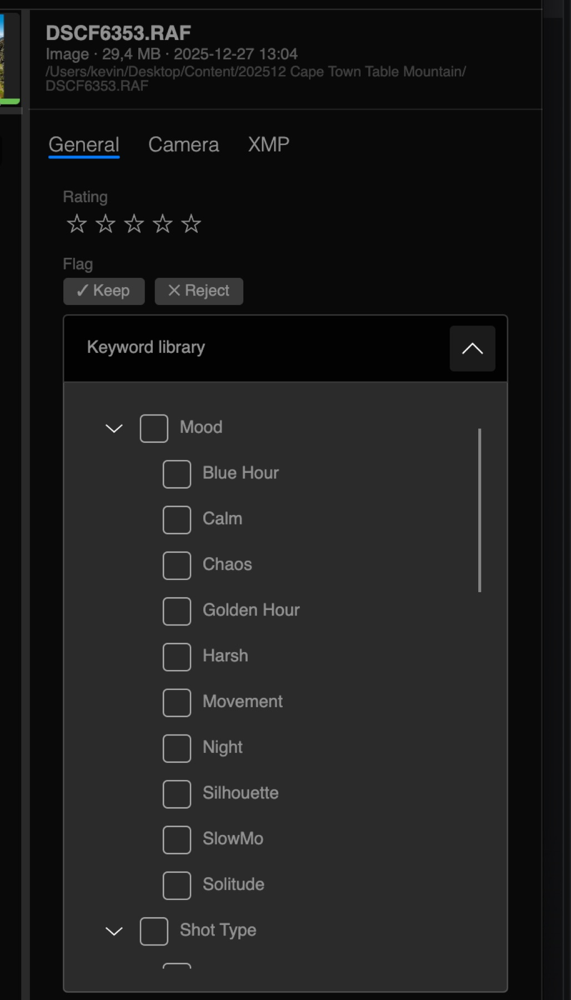
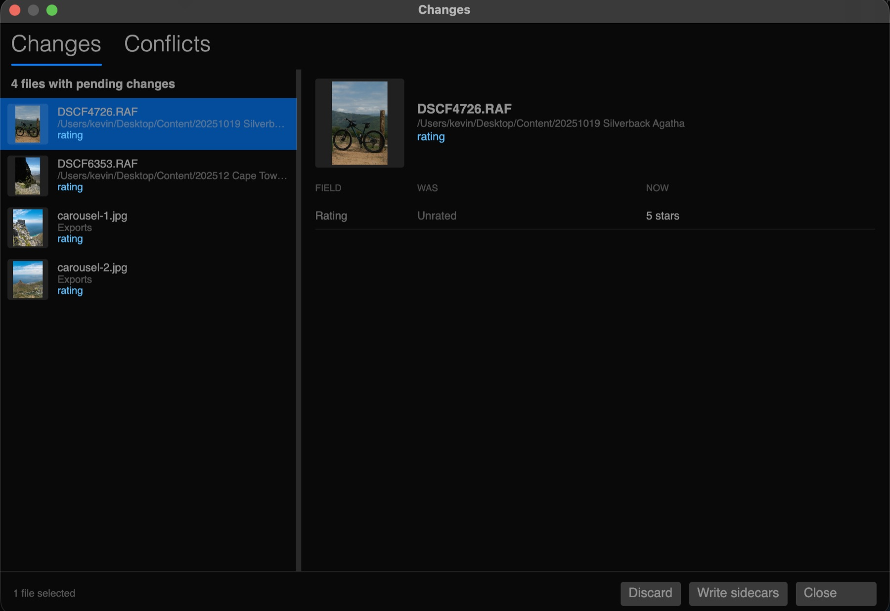

Rate the whole shoot.
Write it when you're ready.
A fast, non-destructive browser for photographs and video.
Hundreds of judgements in a sitting — stars, flags, keywords, labels. They are held, not written. When the pass is done you sync, and walk away.

Your files are not touched until you say so.Because writing is slow, and you are not. A star written the moment you press it means rewriting a file: the application waits on the disk, and so do you. Held instead, a pass through four hundred frames costs nothing but your attention.And because you change your mind. An edit you discard never reached the photograph, so there is nothing to undo and no trace left behind.
Every other browser writes as you work — a star here, a keyword there, each one a disk write into the photograph. BetterDAM keeps your edits in a staging area, so rating a hundred frames costs nothing but your attention.
Edit at speed
Stars, keep and reject flags, keywords, labels, titles. Nothing is written, so nothing is slow — and nothing is final.
See before and after
Every pending change listed with the value it started from and the value it will become. Write the ones you want, discard the rest.
Commit in one go
Write XMP sidecars, or embed into the files themselves. Start it, make coffee, come back to a library that agrees with itself.
Make hundreds of edits, then click sync and walk away.
A shoot is judged one frame at a time.
Drag the divider to the floor and the grid collapses into a single strip with the picture filling the rest of the window. Drag it back for the contact sheet. The thumbnail size still sets how tall the strip is.
- EFilmstrip — one row, the picture large
- FFullscreen — the frame against black, nothing else
- SpacePlay — video runs inline, in place
- ⌘BFolders — out of the way in one key
Panels collapse by dragging their divider shut, and come back from the tab it leaves behind. The window opens the way you left it.

Your own vocabulary, as a tick list.
Arrange your keywords the way you think about your work — Shot type, Subject, Mood. Ticking wide under Shot type writes wide, never Shot type|wide, so what you tag stays readable by every other tool.
- →Import the keywords already on your files and keep your arrangement
- →Restrict to the library, so the same subject never becomes four words
- →Copy keywords from one frame and paste them onto a selection

Nothing is written behind your back.
Every change you have staged, with the value it started from beside the value it will become. Write a file, discard a file, or write the lot. Close the app with work pending and it is still there when you open it again.

Built for folders that are too big.
Fifty thousand files in a folder
Only the tiles you can see are built, so a huge folder opens like a small one and scrolls like one too.
The camera already made oneEvery raw file carries a JPEG the camera made at the moment of the shot. Reading that costs a fraction of developing the sensor data, so a folder fills from the camera's own rendering.A frame is only developed when you ask to judge it properly — and then it is kept, so coming back to it is instant.
Raw files carry a preview inside them. We read those in batches rather than developing every frame to draw a grid.
Develop once, keep it
Judge a frame on the real sensor data when you want to. The rendition is kept, so going back to it is instant.
Across the whole library
Rating, flag, label, keyword, camera, lens, orientation, date — over everything indexed, not just the folder on screen.
It hands your work to the apps you already use.
Metadata is written as XMPA sidecar is a small file beside the photograph — DSCF6353.xmp next to DSCF6353.RAF — holding the stars, keywords and labels. Delete it and the photograph is exactly as the camera wrote it.Raw files are never rewritten, which is how Lightroom, Bridge and Camera Raw treat them too. JPEG and video can take the metadata inside the file instead, when you sync. — the same sidecars Lightroom, Bridge and Camera Raw read, and the same fields Resolve and Premiere understand. A raw file is never rewritten; its sidecar is the record, which is how the rest of the industry treats it.
- ✓Photographs and video together, with one way of working across both
- ✓Raw + JPEG pairs stacked as one photograph, because that is what they are
- ✓Edits made elsewhere are noticed, and shown side by side before anything is settled
- ✓Your folders stay your folders — no catalogue to import into, no copies madeA workspace is just the folder you opened. Nothing is moved, renamed or hidden, and the folder is as usable in Finder, Bridge or Resolve while BetterDAM has it open as it was before.Search, keyword lists and indexing are scoped to that workspace, with one toggle to look across everything you have ever opened.Everything the application generates — thumbnails, previews, developed raws, video proxies — is kept in its own store, never beside your media, and can be released again whenever you want the disk space back.